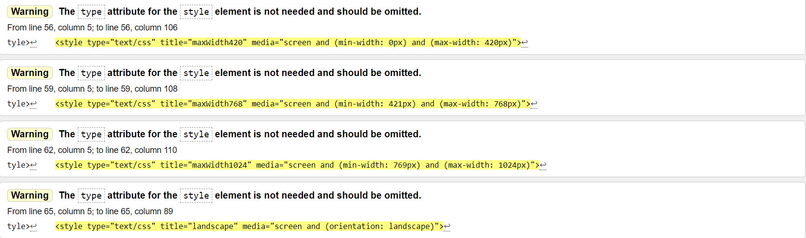
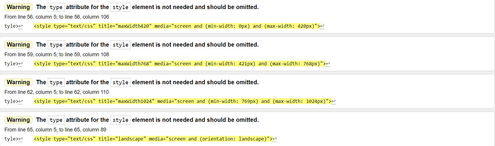
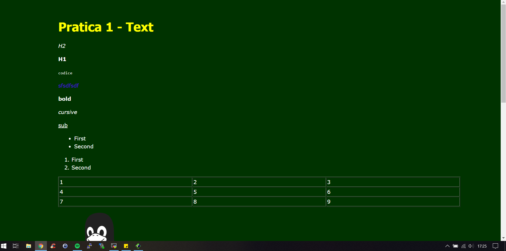
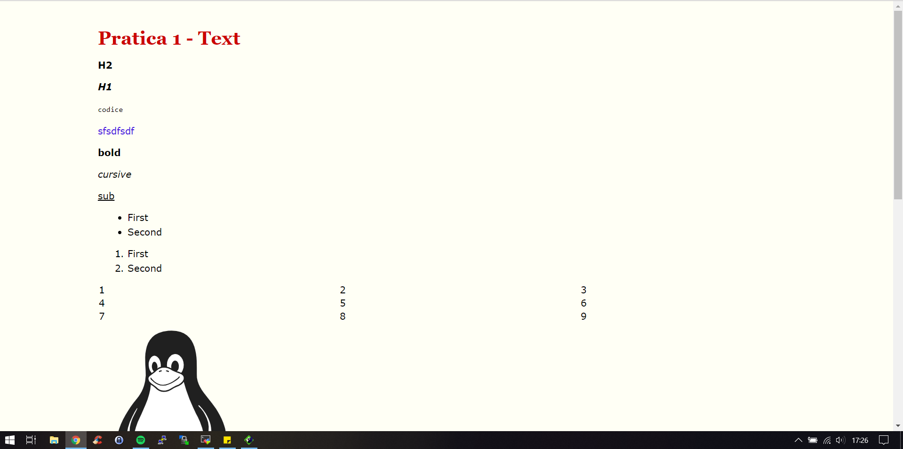
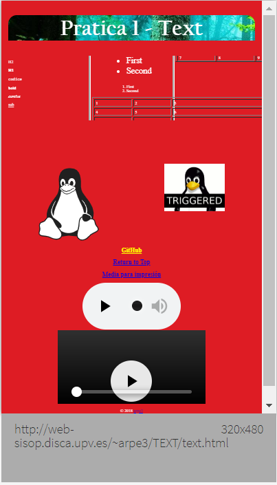
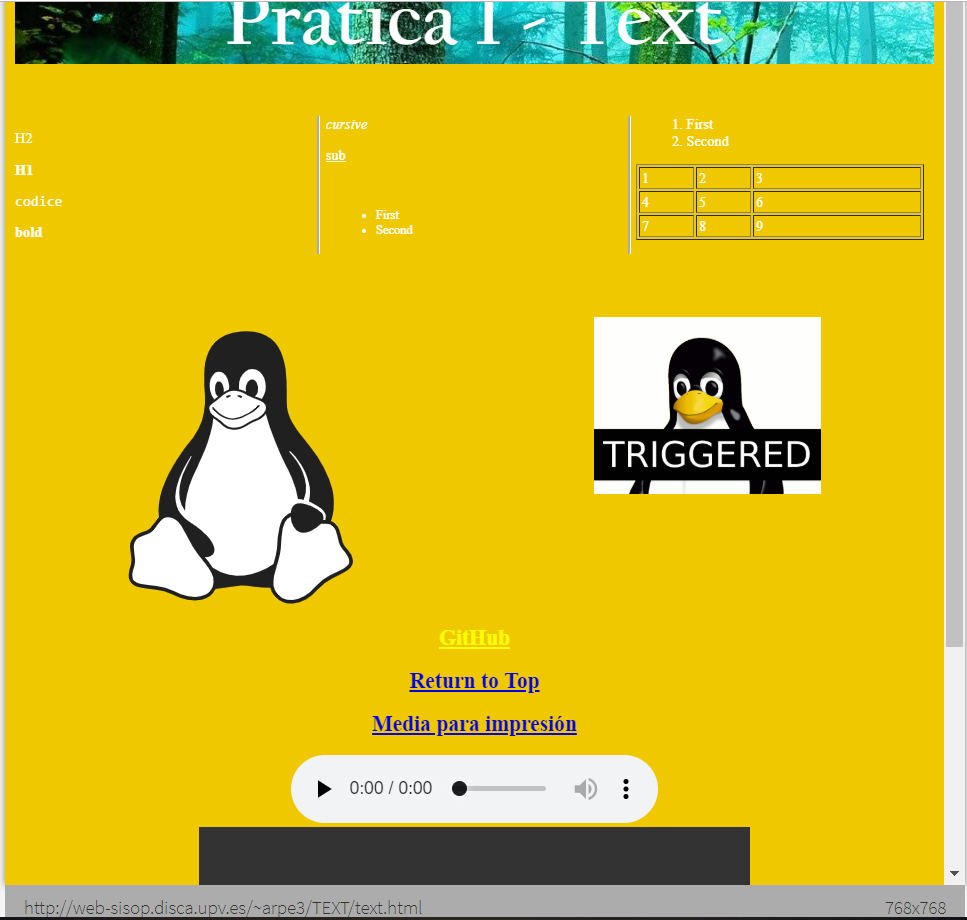
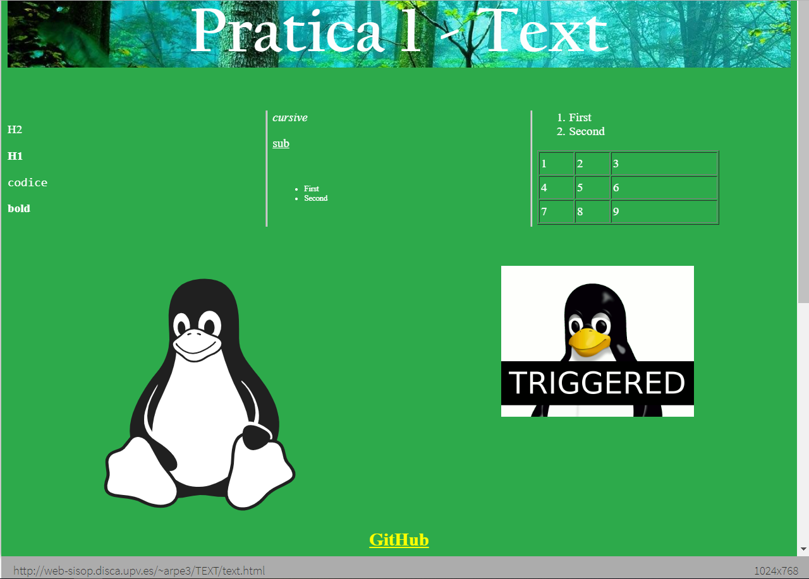
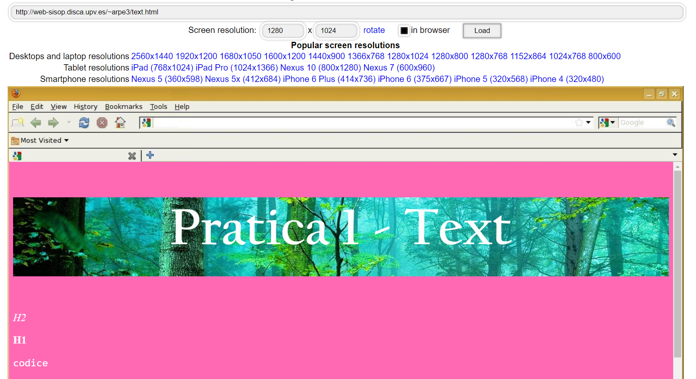
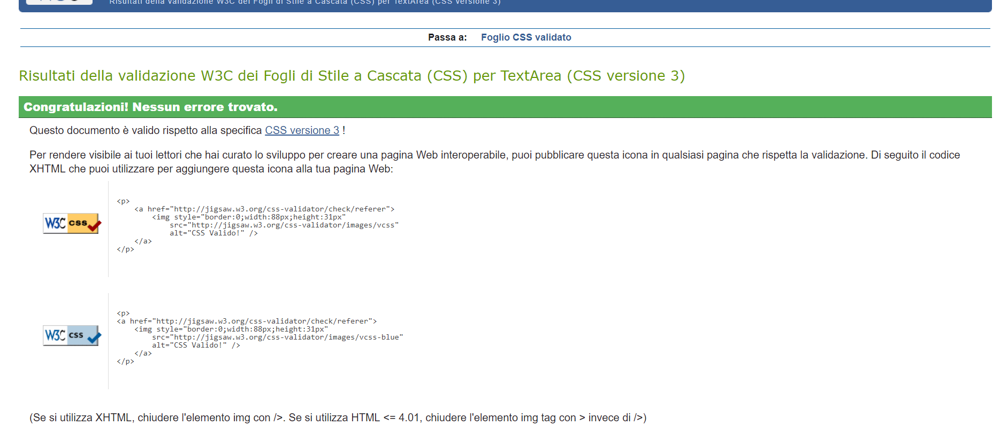
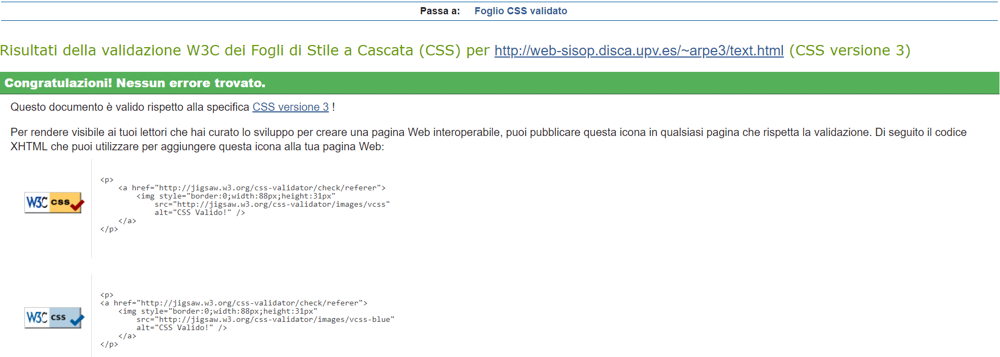

Ejercicio 2

Borrar "type=text/css" porquè es obsoleto.

Error de Bluegriffon en la creacìon detable, se puede borrar sin error.

Borrar "type=text/css" porquè es obsoleto.
Error de Bluegriffon en la creacìon detable, se puede borrar sin error.
Cambie el fondo, no se redimensiona exactamente pero se elimina una parte. Los diversos elementos del texto se redimensionan de acuerdo con el tamaño de la pantalla, distribuidos verticalmente, reduciendo el tamaño de la pantalla. Incluso el menú se redimensiona, pierde parte del texto (nombre del sitio) pero conserva el identificador del logotipo. Los colores no varían, sin embargo, el tamaño del texto varía según el tamaño de la pantalla. Gracias a CSS Media Query puede obtener un sitio web que responde a cualquier tipo de dispositivo.

Forest CSS template

Oldstyle CSS template
Hay cambios en la apariencia de la página, ya que el uso de diferentes estilos css cambiará los aspectos gráficos del sitio. En particular, con la etiqueta "alternate stylesheet" le da al usuario la posibilidad de elegir cómo mostrar la página según sus gustos estéticos.

Resolution 320px = RED

Resolution 768px = YELLOW

Resolution 1024px = GREEN

Resolution Landscape(>1024px) = PINK
Dependiendo del tamaño de la pantalla, puede ver cómo cambia el color de fondo, así como el tamaño de la fuente y todos los elementos de la página para mantener la misma interfaz.

Validate Local CSS.

Validate CSS.